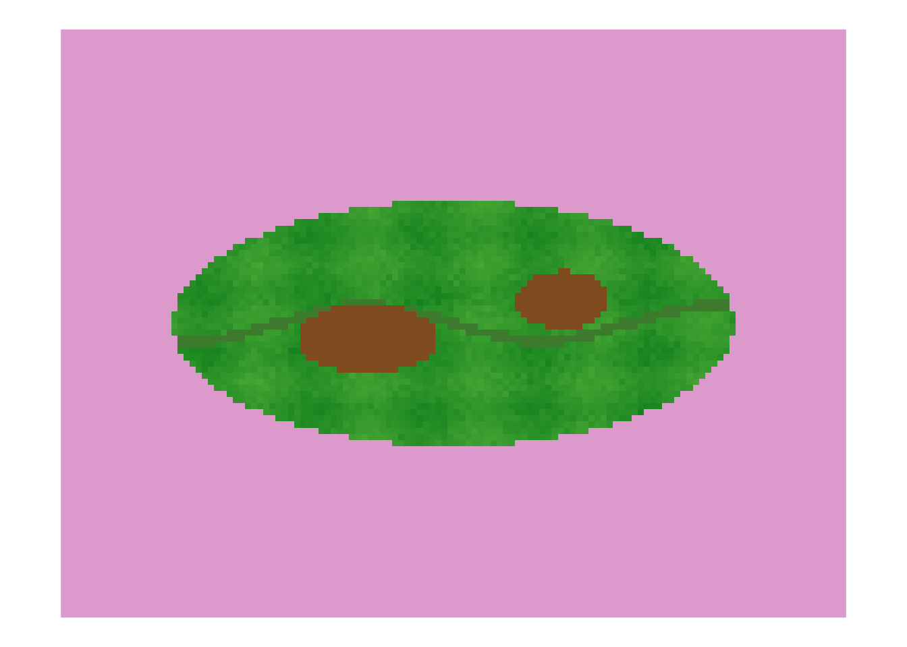
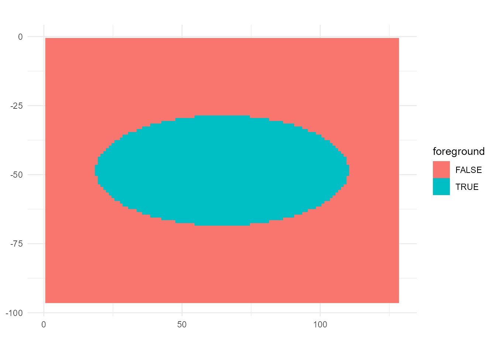
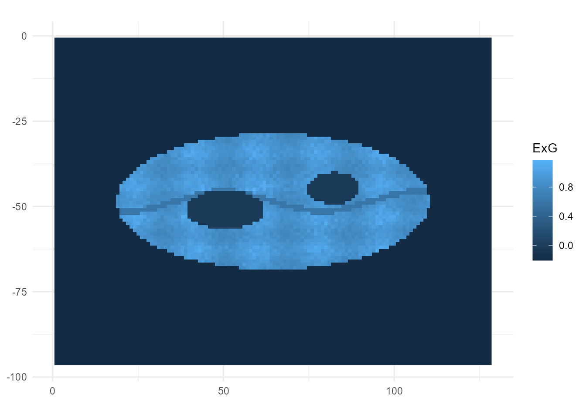

OmniPhenoR Leaf Health Workflow: Segmentation, Morphometry, Disease, and Texture
Source:vignettes/v03-leaf-health-workflow.Rmd
v03-leaf-health-workflow.Rmd1. Purpose
This vignette demonstrates an integrated leaf-health workflow while keeping each processing decision inspectable. It combines image QC, RGB indices, segmentation, morphometry, disease severity, texture, validation, provenance, and reporting.
pliman remains an important specialized R ecosystem for
plant-image analysis and disease severity (Olivoto 2022). OmniPhenoR 0.1.0
contributes a stable integrator grammar and native reference
implementations rather than claiming to replace every specialized
routine.
2. Teaching image and known truth
img <- pheno_data("leaf_rgb")
truth_leaf <- pheno_data("leaf_mask")
truth_lesion <- pheno_data("lesion_mask")
pheno_qc(img)
#> # A tibble: 1 × 12
#> height width finite_fraction missing_fraction min max dynamic_range mean
#> <int> <int> <dbl> <dbl> <dbl> <dbl> <dbl> <dbl>
#> 1 96 128 1 0 0.0769 0.86 0.783 0.649
#> # ℹ 4 more variables: sd <dbl>, low_saturation_fraction <dbl>,
#> # high_saturation_fraction <dbl>, gradient_energy <dbl>3. Create a project object
project <- pheno_project(
"leaf_health_demo",
metadata=list(crop="teaching leaf",sensor="RGB",acquisition="controlled synthetic example"),
design=data.frame(plant_id="PL01",leaf_id="L01",treatment="demo")
)
project
#> <pheno_project> leaf_health_demo
#> design rows: 1
#> metadata: 3 fields
#> results: 0 objectsPhenotypes belong to experimental units, not anonymous image files.
4. Inspect candidate RGB traits
pheno_rgb_summary(img,c("ExG","NGRDI","GLI","VARI","TGI"),mask=truth_leaf)
#> # A tibble: 5 × 7
#> index n mean sd median q05 q95
#> <chr> <int> <dbl> <dbl> <dbl> <dbl> <dbl>
#> 1 ExG 2872 0.781 0.306 0.873 -0.0440 1.03
#> 2 NGRDI 2872 0.435 0.257 0.513 -0.266 0.634
#> 3 GLI 2872 0.478 0.187 0.538 -0.0333 0.615
#> 4 VARI 2872 0.554 0.317 0.650 -0.313 0.799
#> 5 TGI 2872 34.6 11.5 39.1 2.85 39.6RGB indices summarize color behavior. They are not interchangeable with disease severity because lesion classification still requires a tissue mask and symptom rule.
5. Segment the leaf
mask <- pheno_segment(img,index="ExG",threshold="otsu",min_size=50)
mask
#> <pheno_mask> 96 x 128
#> foreground pixels: 2872 ( 23.37 %)
#> index: ExG threshold: -0.045772
#> engine: nativeCompare the estimate with the known synthetic truth.
i <- sum(mask & truth_leaf)
u <- sum(mask | truth_leaf)
c(IoU=i/u,Dice=2*i/(sum(mask)+sum(truth_leaf)))
#> IoU Dice
#> 1 1A real project should perform this comparison against independent expert annotation over the intended deployment domain.
6. Measure morphology
shape <- pheno_morphology(mask)
shape
#> # A tibble: 1 × 13
#> object_id area_px perimeter_px centroid_x centroid_y bbox_width_px
#> <int> <int> <int> <dbl> <dbl> <dbl>
#> 1 1 2872 264 64.5 48.5 92
#> # ℹ 7 more variables: bbox_height_px <dbl>, equivalent_diameter_px <dbl>,
#> # circularity <dbl>, aspect_ratio <dbl>, eccentricity <dbl>,
#> # major_axis_px <dbl>, minor_axis_px <dbl>Propagate a physical scale when a valid reference is available.
sc <- pheno_calibrate_scale(200,50,"mm")
pheno_morphology(mask,scale=sc)[,c("area_px","perimeter_px","area","perimeter")]
#> # A tibble: 1 × 4
#> area_px perimeter_px area perimeter
#> <int> <int> <dbl> <dbl>
#> 1 2872 264 180. 66Pixel area and physical area are not interchangeable.
7. Disease severity from explicit masks
truth <- pheno_disease(leaf_mask=truth_leaf,lesion_mask=truth_lesion)
truth$summary
#> # A tibble: 1 × 4
#> leaf_area_px lesion_area_px healthy_area_px severity_percent
#> <int> <int> <int> <dbl>
#> 1 2872 317 2555 11.0This is the cleanest validation reference because the denominator and lesion pixels are explicit.
8. Candidate image-derived lesion classification
est <- pheno_disease(
x=img,
leaf_mask=mask,
lesion_index="ExR",
lesion_threshold=.15,
lesion_direction="above"
)
est$summary
#> # A tibble: 1 × 4
#> leaf_area_px lesion_area_px healthy_area_px severity_percent
#> <int> <int> <int> <dbl>
#> 1 2872 317 2555 11.0A mismatch can arise from leaf-mask error, lesion threshold, veins, symptom heterogeneity, color overlap, or illumination. Investigate the processing stage rather than labeling every discrepancy as one generic model error.
9. Compare explicit and estimated severity
data.frame(
source=c("truth mask","image rule"),
severity=c(truth$summary$severity_percent,est$summary$severity_percent)
)
#> source severity
#> 1 truth mask 11.0376
#> 2 image rule 11.0376A research project should repeat this over annotated images spanning symptom type, severity, genotype, date, and acquisition conditions.
10. Add texture inside the leaf
tex <- pheno_texture(
pheno_data("leaf_gray"),
methods=c("first_order","glcm","lbp","gabor","dwt"),
mask=mask,
levels=16,
distances=c(1,2),
angles=c(0,90),
wavelengths=c(4,8),
dwt_levels=2
)
tex
#> <pheno_texture>
#> methods: first_order, glcm, lbp, gabor, dwtTexture can complement color by describing organization rather than only average channel balance. It should not be added solely to increase the number of candidate predictors.
11. Inspect the built-in workflow
wf <- pheno_workflow("leaf_health")
wf
#> <pheno_workflow> leaf_health
#> steps: segment -> rgb -> disease -> texture
#> version: 0.2.0
p <- pheno_pipeline(img,"leaf_health")
p
#> <pheno_pipeline> leaf_health
#> results: rgb, mask, cover_fraction, disease, texture
names(p$results)
#> [1] "rgb" "mask" "cover_fraction" "disease"
#> [5] "texture"The preset is inspectable. It is a reproducible starting point, not a claim of universal optimality.
12. Override the preset explicitly
p2 <- pheno_pipeline(
img,
"leaf_health",
overrides=list(
segment=list(index="GLI",min_size=100),
rgb=list(indices=c("ExG","GLI","VARI","TGI")),
texture=list(methods=c("first_order","glcm"),levels=16)
)
)
p2$settings
#> $segment
#> $segment$index
#> [1] "GLI"
#>
#> $segment$threshold
#> [1] "otsu"
#>
#> $segment$min_size
#> [1] 100
#>
#>
#> $rgb
#> $rgb$indices
#> [1] "ExG" "GLI" "VARI" "TGI"
#>
#>
#> $disease
#> $disease$lesion_index
#> [1] "ExR"
#>
#>
#> $texture
#> $texture$methods
#> [1] "first_order" "glcm"
#>
#> $texture$levels
#> [1] 16Every override remains visible in the pipeline object.
13. Sensitivity to segmentation threshold
base <- attr(pheno_segment(img,"ExG"),"threshold")
th <- base + seq(-.08,.08,length.out=9)
sens <- data.frame(
threshold=th,
leaf_fraction=vapply(th,function(z)mean(pheno_segment(img,"ExG",threshold=z,min_size=50)),numeric(1))
)
sens
#> threshold leaf_fraction
#> 1 -0.125771764 0.2337240
#> 2 -0.105771764 0.2337240
#> 3 -0.085771764 0.2337240
#> 4 -0.065771764 0.2337240
#> 5 -0.045771764 0.2337240
#> 6 -0.025771764 0.2079264
#> 7 -0.005771764 0.2079264
#> 8 0.014228236 0.2079264
#> 9 0.034228236 0.2079264If morphology or severity changes strongly across a narrow defensible range, report the sensitivity. Do not select a threshold because it maximizes a treatment p-value.
14. QC before accepting a phenotype
pheno_qc(img)
#> # A tibble: 1 × 12
#> height width finite_fraction missing_fraction min max dynamic_range mean
#> <int> <int> <dbl> <dbl> <dbl> <dbl> <dbl> <dbl>
#> 1 96 128 1 0 0.0769 0.86 0.783 0.649
#> # ℹ 4 more variables: sd <dbl>, low_saturation_fraction <dbl>,
#> # high_saturation_fraction <dbl>, gradient_energy <dbl>
pheno_qc(mask)
#> # A tibble: 1 × 12
#> height width finite_fraction missing_fraction min max dynamic_range mean
#> <int> <int> <dbl> <dbl> <dbl> <dbl> <dbl> <dbl>
#> 1 96 128 1 0 0 1 1 0.234
#> # ℹ 4 more variables: sd <dbl>, low_saturation_fraction <dbl>,
#> # high_saturation_fraction <dbl>, gradient_energy <dbl>QC metrics are screening diagnostics. Exclusion thresholds must be calibrated to the acquisition protocol and not chosen because they remove inconvenient biological observations.
15. Validate numerical truths
pheno_validate("all")
#> # A tibble: 21 × 6
#> domain check estimate target tolerance pass
#> <chr> <chr> <dbl> <dbl> <dbl> <lgl>
#> 1 rgb NGRDI scale invariance 0.5 0.5 1e-12 TRUE
#> 2 rgb GLI scale invariance 0.6 0.6 1e-12 TRUE
#> 3 rgb ExG scale invariance 1 1 1e-12 TRUE
#> 4 morphology square area 100 100 0 TRUE
#> 5 morphology square perimeter 40 40 0 TRUE
#> 6 morphology frozen rectangle area 1200 1200 0 TRUE
#> 7 disease known 20 percent severity 20 20 0 TRUE
#> 8 disease frozen severity 5 percent 5.00 5 5e- 2 TRUE
#> 9 disease frozen severity 10 percent 10.0 10 5e- 2 TRUE
#> 10 disease frozen severity 25 percent 25.0 25 5e- 2 TRUE
#> # ℹ 11 more rowsKnown-shape and known-severity checks verify numerical behavior separately from biological generalization.
16. Freeze provenance
a <- pheno_audit(p)
a$R
#> [1] "R version 4.6.0 (2026-04-24 ucrt)"
a$package
#> [1] "1.0.0"
a$settings
#> $segment
#> $segment$index
#> [1] "ExG"
#>
#> $segment$threshold
#> [1] "otsu"
#>
#> $segment$min_size
#> [1] 50
#>
#>
#> $rgb
#> $rgb$indices
#> [1] "ExG" "NGRDI" "GLI" "VARI" "TGI"
#>
#>
#> $disease
#> $disease$lesion_index
#> [1] "ExR"
#>
#>
#> $texture
#> $texture$methods
#> [1] "first_order" "glcm" "lbp"For file-based projects, add source-image hashes so the analysis can be tied to immutable inputs.
17. Diagnostic figures
pheno_plot(img,"image")
pheno_plot(mask,"mask")
pheno_plot(img,"index",index="ExG")


A methods figure should show enough intermediate layers to reveal how the phenotype was obtained.
18. Report skeleton
pheno_report(p,"leaf_health_report.md","Leaf health phenotyping")19. Validation design for disease studies
A credible workflow should include independent leaf and lesion annotation, a broad severity range, multiple symptom phenotypes where relevant, repeated acquisition, validation across dates/genotypes, agreement metrics rather than correlation alone, threshold sensitivity, explicit rules for chlorosis/necrosis/veins/senescence, and a frozen processing rule before confirmatory treatment inference.
20. Minimal integrated script
img <- pheno_data("leaf_rgb")
mask <- pheno_segment(img,"ExG","otsu",min_size=50)
shape <- pheno_morphology(mask)
disease <- pheno_disease(img,leaf_mask=mask,lesion_index="ExR",lesion_threshold=.15)
texture <- pheno_texture(pheno_data("leaf_gray"),c("first_order","glcm","lbp"),mask=mask,levels=16)
list(shape=shape,disease=disease$summary,texture=texture$results)
#> $shape
#> # A tibble: 1 × 13
#> object_id area_px perimeter_px centroid_x centroid_y bbox_width_px
#> <int> <int> <int> <dbl> <dbl> <dbl>
#> 1 1 2872 264 64.5 48.5 92
#> # ℹ 7 more variables: bbox_height_px <dbl>, equivalent_diameter_px <dbl>,
#> # circularity <dbl>, aspect_ratio <dbl>, eccentricity <dbl>,
#> # major_axis_px <dbl>, minor_axis_px <dbl>
#>
#> $disease
#> # A tibble: 1 × 4
#> leaf_area_px lesion_area_px healthy_area_px severity_percent
#> <int> <int> <int> <dbl>
#> 1 2872 317 2555 11.0
#>
#> $texture
#> $texture$first_order
#> # A tibble: 1 × 18
#> n min q05 q25 median q75 q95 max mean sd variance cv
#> <int> <dbl> <dbl> <dbl> <dbl> <dbl> <dbl> <dbl> <dbl> <dbl> <dbl> <dbl>
#> 1 2872 0.322 0.322 0.428 0.456 0.480 0.508 0.539 0.446 0.0521 0.00271 0.117
#> # ℹ 6 more variables: skewness <dbl>, kurtosis_excess <dbl>, entropy <dbl>,
#> # uniformity <dbl>, iqr <dbl>, mad <dbl>
#>
#> $texture$glcm
#> # A tibble: 4 × 12
#> distance angle contrast dissimilarity homogeneity ASM energy entropy
#> <int> <dbl> <dbl> <dbl> <dbl> <dbl> <dbl> <dbl>
#> 1 1 0 1.44 0.737 0.689 0.0537 0.232 3.19
#> 2 1 45 2.56 0.965 0.640 0.0476 0.218 3.36
#> 3 1 90 2.35 0.923 0.648 0.0490 0.221 3.32
#> 4 1 135 2.61 0.981 0.636 0.0475 0.218 3.37
#> # ℹ 4 more variables: correlation <dbl>, max_probability <dbl>, mean_i <dbl>,
#> # variance_i <dbl>
#>
#> $texture$lbp
#> $texture$lbp$summary
#> # A tibble: 1 × 5
#> n entropy uniformity uniform_pattern_probability dominant_code
#> <int> <dbl> <dbl> <dbl> <int>
#> 1 2612 4.40 0.0530 0.713 255
#>
#> $texture$lbp$histogram
#> # A tibble: 256 × 3
#> code count probability
#> <int> <int> <dbl>
#> 1 0 160 0.0613
#> 2 1 27 0.0103
#> 3 2 26 0.00995
#> 4 3 18 0.00689
#> 5 4 40 0.0153
#> 6 5 10 0.00383
#> 7 6 17 0.00651
#> 8 7 19 0.00727
#> 9 8 25 0.00957
#> 10 9 6 0.00230
#> # ℹ 246 more rows
#>
#> $texture$lbp$codes
#> [,1] [,2] [,3] [,4] [,5] [,6] [,7] [,8] [,9] [,10] [,11] [,12] [,13]
#> [1,] NA NA NA NA NA NA NA NA NA NA NA NA NA
#> [2,] NA NA NA NA NA NA NA NA NA NA NA NA NA
#> [3,] NA NA NA NA NA NA NA NA NA NA NA NA NA
#> [4,] NA NA NA NA NA NA NA NA NA NA NA NA NA
#> [5,] NA NA NA NA NA NA NA NA NA NA NA NA NA
#> [6,] NA NA NA NA NA NA NA NA NA NA NA NA NA
#> [7,] NA NA NA NA NA NA NA NA NA NA NA NA NA
#> [8,] NA NA NA NA NA NA NA NA NA NA NA NA NA
#> [9,] NA NA NA NA NA NA NA NA NA NA NA NA NA
#> [10,] NA NA NA NA NA NA NA NA NA NA NA NA NA
#> [11,] NA NA NA NA NA NA NA NA NA NA NA NA NA
#> [12,] NA NA NA NA NA NA NA NA NA NA NA NA NA
#> [13,] NA NA NA NA NA NA NA NA NA NA NA NA NA
#> [14,] NA NA NA NA NA NA NA NA NA NA NA NA NA
#> [15,] NA NA NA NA NA NA NA NA NA NA NA NA NA
#> [16,] NA NA NA NA NA NA NA NA NA NA NA NA NA
#> [17,] NA NA NA NA NA NA NA NA NA NA NA NA NA
#> [18,] NA NA NA NA NA NA NA NA NA NA NA NA NA
#> [19,] NA NA NA NA NA NA NA NA NA NA NA NA NA
#> [20,] NA NA NA NA NA NA NA NA NA NA NA NA NA
#> [21,] NA NA NA NA NA NA NA NA NA NA NA NA NA
#> [22,] NA NA NA NA NA NA NA NA NA NA NA NA NA
#> [23,] NA NA NA NA NA NA NA NA NA NA NA NA NA
#> [24,] NA NA NA NA NA NA NA NA NA NA NA NA NA
#> [25,] NA NA NA NA NA NA NA NA NA NA NA NA NA
#> [26,] NA NA NA NA NA NA NA NA NA NA NA NA NA
#> [27,] NA NA NA NA NA NA NA NA NA NA NA NA NA
#> [28,] NA NA NA NA NA NA NA NA NA NA NA NA NA
#> [29,] NA NA NA NA NA NA NA NA NA NA NA NA NA
#> [30,] NA NA NA NA NA NA NA NA NA NA NA NA NA
#> [31,] NA NA NA NA NA NA NA NA NA NA NA NA NA
#> [32,] NA NA NA NA NA NA NA NA NA NA NA NA NA
#> [33,] NA NA NA NA NA NA NA NA NA NA NA NA NA
#> [34,] NA NA NA NA NA NA NA NA NA NA NA NA NA
#> [35,] NA NA NA NA NA NA NA NA NA NA NA NA NA
#> [36,] NA NA NA NA NA NA NA NA NA NA NA NA NA
#> [37,] NA NA NA NA NA NA NA NA NA NA NA NA NA
#> [38,] NA NA NA NA NA NA NA NA NA NA NA NA NA
#> [39,] NA NA NA NA NA NA NA NA NA NA NA NA NA
#> [40,] NA NA NA NA NA NA NA NA NA NA NA NA NA
#> [41,] NA NA NA NA NA NA NA NA NA NA NA NA NA
#> [42,] NA NA NA NA NA NA NA NA NA NA NA NA NA
#> [43,] NA NA NA NA NA NA NA NA NA NA NA NA NA
#> [44,] NA NA NA NA NA NA NA NA NA NA NA NA NA
#> [45,] NA NA NA NA NA NA NA NA NA NA NA NA NA
#> [46,] NA NA NA NA NA NA NA NA NA NA NA NA NA
#> [47,] NA NA NA NA NA NA NA NA NA NA NA NA NA
#> [48,] NA NA NA NA NA NA NA NA NA NA NA NA NA
#> [49,] NA NA NA NA NA NA NA NA NA NA NA NA NA
#> [50,] NA NA NA NA NA NA NA NA NA NA NA NA NA
#> [51,] NA NA NA NA NA NA NA NA NA NA NA NA NA
#> [52,] NA NA NA NA NA NA NA NA NA NA NA NA NA
#> [53,] NA NA NA NA NA NA NA NA NA NA NA NA NA
#> [54,] NA NA NA NA NA NA NA NA NA NA NA NA NA
#> [55,] NA NA NA NA NA NA NA NA NA NA NA NA NA
#> [56,] NA NA NA NA NA NA NA NA NA NA NA NA NA
#> [57,] NA NA NA NA NA NA NA NA NA NA NA NA NA
#> [58,] NA NA NA NA NA NA NA NA NA NA NA NA NA
#> [59,] NA NA NA NA NA NA NA NA NA NA NA NA NA
#> [60,] NA NA NA NA NA NA NA NA NA NA NA NA NA
#> [61,] NA NA NA NA NA NA NA NA NA NA NA NA NA
#> [62,] NA NA NA NA NA NA NA NA NA NA NA NA NA
#> [63,] NA NA NA NA NA NA NA NA NA NA NA NA NA
#> [64,] NA NA NA NA NA NA NA NA NA NA NA NA NA
#> [65,] NA NA NA NA NA NA NA NA NA NA NA NA NA
#> [66,] NA NA NA NA NA NA NA NA NA NA NA NA NA
#> [67,] NA NA NA NA NA NA NA NA NA NA NA NA NA
#> [68,] NA NA NA NA NA NA NA NA NA NA NA NA NA
#> [69,] NA NA NA NA NA NA NA NA NA NA NA NA NA
#> [70,] NA NA NA NA NA NA NA NA NA NA NA NA NA
#> [71,] NA NA NA NA NA NA NA NA NA NA NA NA NA
#> [72,] NA NA NA NA NA NA NA NA NA NA NA NA NA
#> [73,] NA NA NA NA NA NA NA NA NA NA NA NA NA
#> [74,] NA NA NA NA NA NA NA NA NA NA NA NA NA
#> [75,] NA NA NA NA NA NA NA NA NA NA NA NA NA
#> [76,] NA NA NA NA NA NA NA NA NA NA NA NA NA
#> [77,] NA NA NA NA NA NA NA NA NA NA NA NA NA
#> [78,] NA NA NA NA NA NA NA NA NA NA NA NA NA
#> [79,] NA NA NA NA NA NA NA NA NA NA NA NA NA
#> [80,] NA NA NA NA NA NA NA NA NA NA NA NA NA
#> [81,] NA NA NA NA NA NA NA NA NA NA NA NA NA
#> [82,] NA NA NA NA NA NA NA NA NA NA NA NA NA
#> [83,] NA NA NA NA NA NA NA NA NA NA NA NA NA
#> [84,] NA NA NA NA NA NA NA NA NA NA NA NA NA
#> [85,] NA NA NA NA NA NA NA NA NA NA NA NA NA
#> [86,] NA NA NA NA NA NA NA NA NA NA NA NA NA
#> [87,] NA NA NA NA NA NA NA NA NA NA NA NA NA
#> [88,] NA NA NA NA NA NA NA NA NA NA NA NA NA
#> [89,] NA NA NA NA NA NA NA NA NA NA NA NA NA
#> [90,] NA NA NA NA NA NA NA NA NA NA NA NA NA
#> [91,] NA NA NA NA NA NA NA NA NA NA NA NA NA
#> [92,] NA NA NA NA NA NA NA NA NA NA NA NA NA
#> [93,] NA NA NA NA NA NA NA NA NA NA NA NA NA
#> [94,] NA NA NA NA NA NA NA NA NA NA NA NA NA
#> [95,] NA NA NA NA NA NA NA NA NA NA NA NA NA
#> [96,] NA NA NA NA NA NA NA NA NA NA NA NA NA
#> [,14] [,15] [,16] [,17] [,18] [,19] [,20] [,21] [,22] [,23] [,24] [,25]
#> [1,] NA NA NA NA NA NA NA NA NA NA NA NA
#> [2,] NA NA NA NA NA NA NA NA NA NA NA NA
#> [3,] NA NA NA NA NA NA NA NA NA NA NA NA
#> [4,] NA NA NA NA NA NA NA NA NA NA NA NA
#> [5,] NA NA NA NA NA NA NA NA NA NA NA NA
#> [6,] NA NA NA NA NA NA NA NA NA NA NA NA
#> [7,] NA NA NA NA NA NA NA NA NA NA NA NA
#> [8,] NA NA NA NA NA NA NA NA NA NA NA NA
#> [9,] NA NA NA NA NA NA NA NA NA NA NA NA
#> [10,] NA NA NA NA NA NA NA NA NA NA NA NA
#> [11,] NA NA NA NA NA NA NA NA NA NA NA NA
#> [12,] NA NA NA NA NA NA NA NA NA NA NA NA
#> [13,] NA NA NA NA NA NA NA NA NA NA NA NA
#> [14,] NA NA NA NA NA NA NA NA NA NA NA NA
#> [15,] NA NA NA NA NA NA NA NA NA NA NA NA
#> [16,] NA NA NA NA NA NA NA NA NA NA NA NA
#> [17,] NA NA NA NA NA NA NA NA NA NA NA NA
#> [18,] NA NA NA NA NA NA NA NA NA NA NA NA
#> [19,] NA NA NA NA NA NA NA NA NA NA NA NA
#> [20,] NA NA NA NA NA NA NA NA NA NA NA NA
#> [21,] NA NA NA NA NA NA NA NA NA NA NA NA
#> [22,] NA NA NA NA NA NA NA NA NA NA NA NA
#> [23,] NA NA NA NA NA NA NA NA NA NA NA NA
#> [24,] NA NA NA NA NA NA NA NA NA NA NA NA
#> [25,] NA NA NA NA NA NA NA NA NA NA NA NA
#> [26,] NA NA NA NA NA NA NA NA NA NA NA NA
#> [27,] NA NA NA NA NA NA NA NA NA NA NA NA
#> [28,] NA NA NA NA NA NA NA NA NA NA NA NA
#> [29,] NA NA NA NA NA NA NA NA NA NA NA NA
#> [30,] NA NA NA NA NA NA NA NA NA NA NA NA
#> [31,] NA NA NA NA NA NA NA NA NA NA NA NA
#> [32,] NA NA NA NA NA NA NA NA NA NA NA NA
#> [33,] NA NA NA NA NA NA NA NA NA NA NA NA
#> [34,] NA NA NA NA NA NA NA NA NA NA NA NA
#> [35,] NA NA NA NA NA NA NA NA NA NA NA NA
#> [36,] NA NA NA NA NA NA NA NA NA NA NA NA
#> [37,] NA NA NA NA NA NA NA NA NA NA NA NA
#> [38,] NA NA NA NA NA NA NA NA NA NA NA NA
#> [39,] NA NA NA NA NA NA NA NA NA NA NA NA
#> [40,] NA NA NA NA NA NA NA NA NA NA NA NA
#> [41,] NA NA NA NA NA NA NA NA NA NA NA 11
#> [42,] NA NA NA NA NA NA NA NA NA NA 31 55
#> [43,] NA NA NA NA NA NA NA NA NA 197 254 0
#> [44,] NA NA NA NA NA NA NA NA 211 187 77 14
#> [45,] NA NA NA NA NA NA NA 96 255 96 246 255
#> [46,] NA NA NA NA NA NA NA 224 209 160 217 56
#> [47,] NA NA NA NA NA NA NA 128 255 96 255 124
#> [48,] NA NA NA NA NA NA 255 107 73 0 177 248
#> [49,] NA NA NA NA NA NA 193 192 135 255 9 0
#> [50,] NA NA NA NA NA NA NA 135 131 141 6 135
#> [51,] NA NA NA NA NA NA NA 255 255 255 255 255
#> [52,] NA NA NA NA NA NA NA 255 255 239 223 175
#> [53,] NA NA NA NA NA NA NA NA 248 96 255 116
#> [54,] NA NA NA NA NA NA NA NA NA 96 201 16
#> [55,] NA NA NA NA NA NA NA NA NA NA 247 255
#> [56,] NA NA NA NA NA NA NA NA NA NA NA 104
#> [57,] NA NA NA NA NA NA NA NA NA NA NA NA
#> [58,] NA NA NA NA NA NA NA NA NA NA NA NA
#> [59,] NA NA NA NA NA NA NA NA NA NA NA NA
#> [60,] NA NA NA NA NA NA NA NA NA NA NA NA
#> [61,] NA NA NA NA NA NA NA NA NA NA NA NA
#> [62,] NA NA NA NA NA NA NA NA NA NA NA NA
#> [63,] NA NA NA NA NA NA NA NA NA NA NA NA
#> [64,] NA NA NA NA NA NA NA NA NA NA NA NA
#> [65,] NA NA NA NA NA NA NA NA NA NA NA NA
#> [66,] NA NA NA NA NA NA NA NA NA NA NA NA
#> [67,] NA NA NA NA NA NA NA NA NA NA NA NA
#> [68,] NA NA NA NA NA NA NA NA NA NA NA NA
#> [69,] NA NA NA NA NA NA NA NA NA NA NA NA
#> [70,] NA NA NA NA NA NA NA NA NA NA NA NA
#> [71,] NA NA NA NA NA NA NA NA NA NA NA NA
#> [72,] NA NA NA NA NA NA NA NA NA NA NA NA
#> [73,] NA NA NA NA NA NA NA NA NA NA NA NA
#> [74,] NA NA NA NA NA NA NA NA NA NA NA NA
#> [75,] NA NA NA NA NA NA NA NA NA NA NA NA
#> [76,] NA NA NA NA NA NA NA NA NA NA NA NA
#> [77,] NA NA NA NA NA NA NA NA NA NA NA NA
#> [78,] NA NA NA NA NA NA NA NA NA NA NA NA
#> [79,] NA NA NA NA NA NA NA NA NA NA NA NA
#> [80,] NA NA NA NA NA NA NA NA NA NA NA NA
#> [81,] NA NA NA NA NA NA NA NA NA NA NA NA
#> [82,] NA NA NA NA NA NA NA NA NA NA NA NA
#> [83,] NA NA NA NA NA NA NA NA NA NA NA NA
#> [84,] NA NA NA NA NA NA NA NA NA NA NA NA
#> [85,] NA NA NA NA NA NA NA NA NA NA NA NA
#> [86,] NA NA NA NA NA NA NA NA NA NA NA NA
#> [87,] NA NA NA NA NA NA NA NA NA NA NA NA
#> [88,] NA NA NA NA NA NA NA NA NA NA NA NA
#> [89,] NA NA NA NA NA NA NA NA NA NA NA NA
#> [90,] NA NA NA NA NA NA NA NA NA NA NA NA
#> [91,] NA NA NA NA NA NA NA NA NA NA NA NA
#> [92,] NA NA NA NA NA NA NA NA NA NA NA NA
#> [93,] NA NA NA NA NA NA NA NA NA NA NA NA
#> [94,] NA NA NA NA NA NA NA NA NA NA NA NA
#> [95,] NA NA NA NA NA NA NA NA NA NA NA NA
#> [96,] NA NA NA NA NA NA NA NA NA NA NA NA
#> [,26] [,27] [,28] [,29] [,30] [,31] [,32] [,33] [,34] [,35] [,36] [,37]
#> [1,] NA NA NA NA NA NA NA NA NA NA NA NA
#> [2,] NA NA NA NA NA NA NA NA NA NA NA NA
#> [3,] NA NA NA NA NA NA NA NA NA NA NA NA
#> [4,] NA NA NA NA NA NA NA NA NA NA NA NA
#> [5,] NA NA NA NA NA NA NA NA NA NA NA NA
#> [6,] NA NA NA NA NA NA NA NA NA NA NA NA
#> [7,] NA NA NA NA NA NA NA NA NA NA NA NA
#> [8,] NA NA NA NA NA NA NA NA NA NA NA NA
#> [9,] NA NA NA NA NA NA NA NA NA NA NA NA
#> [10,] NA NA NA NA NA NA NA NA NA NA NA NA
#> [11,] NA NA NA NA NA NA NA NA NA NA NA NA
#> [12,] NA NA NA NA NA NA NA NA NA NA NA NA
#> [13,] NA NA NA NA NA NA NA NA NA NA NA NA
#> [14,] NA NA NA NA NA NA NA NA NA NA NA NA
#> [15,] NA NA NA NA NA NA NA NA NA NA NA NA
#> [16,] NA NA NA NA NA NA NA NA NA NA NA NA
#> [17,] NA NA NA NA NA NA NA NA NA NA NA NA
#> [18,] NA NA NA NA NA NA NA NA NA NA NA NA
#> [19,] NA NA NA NA NA NA NA NA NA NA NA NA
#> [20,] NA NA NA NA NA NA NA NA NA NA NA NA
#> [21,] NA NA NA NA NA NA NA NA NA NA NA NA
#> [22,] NA NA NA NA NA NA NA NA NA NA NA NA
#> [23,] NA NA NA NA NA NA NA NA NA NA NA NA
#> [24,] NA NA NA NA NA NA NA NA NA NA NA NA
#> [25,] NA NA NA NA NA NA NA NA NA NA NA NA
#> [26,] NA NA NA NA NA NA NA NA NA NA NA NA
#> [27,] NA NA NA NA NA NA NA NA NA NA NA NA
#> [28,] NA NA NA NA NA NA NA NA NA NA NA NA
#> [29,] NA NA NA NA NA NA NA NA NA NA NA NA
#> [30,] NA NA NA NA NA NA NA NA NA NA NA NA
#> [31,] NA NA NA NA NA NA NA NA NA NA NA NA
#> [32,] NA NA NA NA NA NA NA NA NA NA NA NA
#> [33,] NA NA NA NA NA NA NA NA NA NA NA NA
#> [34,] NA NA NA NA NA NA NA NA NA NA NA 163
#> [35,] NA NA NA NA NA NA NA NA NA 247 239 64
#> [36,] NA NA NA NA NA NA 116 254 33 193 128 247
#> [37,] NA NA NA NA 24 32 200 12 0 247 251 97
#> [38,] NA NA NA 188 126 16 191 103 219 17 224 240
#> [39,] NA 157 46 24 52 254 8 0 255 10 0 225
#> [40,] 255 63 4 255 8 20 174 67 133 134 131 129
#> [41,] 29 4 154 45 6 159 0 231 207 7 135 247
#> [42,] 255 6 255 4 135 191 10 1 199 239 3 129
#> [43,] 132 146 189 126 127 53 238 83 179 229 255 47
#> [44,] 23 191 56 16 188 72 0 239 80 160 253 32
#> [45,] 127 124 92 62 0 254 123 113 255 64 253 112
#> [46,] 24 48 254 52 250 121 0 144 240 234 81 224
#> [47,] 126 16 188 8 16 188 110 11 0 128 139 0
#> [48,] 100 206 28 62 111 0 132 143 7 255 255 255
#> [49,] 144 167 207 0 132 135 255 255 255 255 255 255
#> [50,] 143 0 255 255 255 255 255 255 96 200 0 236
#> [51,] 255 255 255 255 255 0 136 0 128 199 235 65
#> [52,] 8 24 0 144 252 22 175 79 3 147 161 231
#> [53,] 255 63 70 155 60 62 32 239 71 143 0 129
#> [54,] 188 0 254 127 124 108 0 161 231 247 255 99
#> [55,] 124 122 89 56 0 132 223 49 241 249 88 32
#> [56,] 16 176 254 124 126 115 255 64 216 32 254 0
#> [57,] 255 16 184 120 120 64 240 242 255 0 221 50
#> [58,] NA 254 72 8 0 130 137 0 228 226 223 32
#> [59,] NA NA NA 31 15 7 143 11 1 129 223 0
#> [60,] NA NA NA NA 30 7 159 39 239 3 239 2
#> [61,] NA NA NA NA NA NA 175 0 165 195 133 239
#> [62,] NA NA NA NA NA NA NA NA NA 255 67 197
#> [63,] NA NA NA NA NA NA NA NA NA NA NA 227
#> [64,] NA NA NA NA NA NA NA NA NA NA NA NA
#> [65,] NA NA NA NA NA NA NA NA NA NA NA NA
#> [66,] NA NA NA NA NA NA NA NA NA NA NA NA
#> [67,] NA NA NA NA NA NA NA NA NA NA NA NA
#> [68,] NA NA NA NA NA NA NA NA NA NA NA NA
#> [69,] NA NA NA NA NA NA NA NA NA NA NA NA
#> [70,] NA NA NA NA NA NA NA NA NA NA NA NA
#> [71,] NA NA NA NA NA NA NA NA NA NA NA NA
#> [72,] NA NA NA NA NA NA NA NA NA NA NA NA
#> [73,] NA NA NA NA NA NA NA NA NA NA NA NA
#> [74,] NA NA NA NA NA NA NA NA NA NA NA NA
#> [75,] NA NA NA NA NA NA NA NA NA NA NA NA
#> [76,] NA NA NA NA NA NA NA NA NA NA NA NA
#> [77,] NA NA NA NA NA NA NA NA NA NA NA NA
#> [78,] NA NA NA NA NA NA NA NA NA NA NA NA
#> [79,] NA NA NA NA NA NA NA NA NA NA NA NA
#> [80,] NA NA NA NA NA NA NA NA NA NA NA NA
#> [81,] NA NA NA NA NA NA NA NA NA NA NA NA
#> [82,] NA NA NA NA NA NA NA NA NA NA NA NA
#> [83,] NA NA NA NA NA NA NA NA NA NA NA NA
#> [84,] NA NA NA NA NA NA NA NA NA NA NA NA
#> [85,] NA NA NA NA NA NA NA NA NA NA NA NA
#> [86,] NA NA NA NA NA NA NA NA NA NA NA NA
#> [87,] NA NA NA NA NA NA NA NA NA NA NA NA
#> [88,] NA NA NA NA NA NA NA NA NA NA NA NA
#> [89,] NA NA NA NA NA NA NA NA NA NA NA NA
#> [90,] NA NA NA NA NA NA NA NA NA NA NA NA
#> [91,] NA NA NA NA NA NA NA NA NA NA NA NA
#> [92,] NA NA NA NA NA NA NA NA NA NA NA NA
#> [93,] NA NA NA NA NA NA NA NA NA NA NA NA
#> [94,] NA NA NA NA NA NA NA NA NA NA NA NA
#> [95,] NA NA NA NA NA NA NA NA NA NA NA NA
#> [96,] NA NA NA NA NA NA NA NA NA NA NA NA
#> [,38] [,39] [,40] [,41] [,42] [,43] [,44] [,45] [,46] [,47] [,48] [,49]
#> [1,] NA NA NA NA NA NA NA NA NA NA NA NA
#> [2,] NA NA NA NA NA NA NA NA NA NA NA NA
#> [3,] NA NA NA NA NA NA NA NA NA NA NA NA
#> [4,] NA NA NA NA NA NA NA NA NA NA NA NA
#> [5,] NA NA NA NA NA NA NA NA NA NA NA NA
#> [6,] NA NA NA NA NA NA NA NA NA NA NA NA
#> [7,] NA NA NA NA NA NA NA NA NA NA NA NA
#> [8,] NA NA NA NA NA NA NA NA NA NA NA NA
#> [9,] NA NA NA NA NA NA NA NA NA NA NA NA
#> [10,] NA NA NA NA NA NA NA NA NA NA NA NA
#> [11,] NA NA NA NA NA NA NA NA NA NA NA NA
#> [12,] NA NA NA NA NA NA NA NA NA NA NA NA
#> [13,] NA NA NA NA NA NA NA NA NA NA NA NA
#> [14,] NA NA NA NA NA NA NA NA NA NA NA NA
#> [15,] NA NA NA NA NA NA NA NA NA NA NA NA
#> [16,] NA NA NA NA NA NA NA NA NA NA NA NA
#> [17,] NA NA NA NA NA NA NA NA NA NA NA NA
#> [18,] NA NA NA NA NA NA NA NA NA NA NA NA
#> [19,] NA NA NA NA NA NA NA NA NA NA NA NA
#> [20,] NA NA NA NA NA NA NA NA NA NA NA NA
#> [21,] NA NA NA NA NA NA NA NA NA NA NA NA
#> [22,] NA NA NA NA NA NA NA NA NA NA NA NA
#> [23,] NA NA NA NA NA NA NA NA NA NA NA NA
#> [24,] NA NA NA NA NA NA NA NA NA NA NA NA
#> [25,] NA NA NA NA NA NA NA NA NA NA NA NA
#> [26,] NA NA NA NA NA NA NA NA NA NA NA NA
#> [27,] NA NA NA NA NA NA NA NA NA NA NA NA
#> [28,] NA NA NA NA NA NA NA NA NA NA NA NA
#> [29,] NA NA NA NA NA NA NA NA NA NA NA NA
#> [30,] NA NA NA NA NA NA NA NA NA NA NA NA
#> [31,] NA NA NA NA NA NA NA NA NA NA NA 175
#> [32,] NA NA NA NA NA NA 255 46 15 6 159 5
#> [33,] NA NA 129 223 4 139 29 4 215 191 63 46
#> [34,] 231 207 3 255 62 47 79 18 191 60 28 52
#> [35,] 129 247 251 125 124 16 247 255 60 52 254 48
#> [36,] 251 105 0 144 252 122 16 188 124 80 252 56
#> [37,] 248 116 247 251 96 212 254 24 16 250 60 112
#> [38,] 249 104 72 16 176 251 124 126 122 124 40 0
#> [39,] 192 128 151 239 0 152 16 184 40 76 4 223
#> [40,] 135 135 139 4 151 191 14 12 0 143 19 175
#> [41,] 231 231 223 39 239 4 174 95 31 23 191 4
#> [42,] 128 193 159 16 229 255 1 255 46 14 12 2
#> [43,] 67 255 95 26 0 205 2 189 4 159 31 47
#> [44,] 227 241 254 78 2 231 255 45 70 143 14 4
#> [45,] 241 249 64 206 3 129 237 0 135 143 143 143
#> [46,] 224 192 130 135 239 203 133 255 255 255 255 255
#> [47,] 129 255 239 207 135 255 255 255 255 255 255 255
#> [48,] 255 239 199 255 255 255 255 255 255 255 255 255
#> [49,] 0 192 255 255 255 255 255 255 255 255 255 255
#> [50,] 66 227 255 255 255 255 255 255 255 255 255 255
#> [51,] 131 129 255 255 255 255 255 255 255 255 255 255
#> [52,] 199 131 255 255 255 255 255 255 255 255 255 255
#> [53,] 255 115 255 255 255 255 255 255 255 255 255 255
#> [54,] 249 112 240 255 255 255 255 255 255 255 255 255
#> [55,] 249 96 224 200 16 255 255 255 255 255 255 255
#> [56,] 241 224 193 255 59 8 16 176 255 255 255 255
#> [57,] 225 192 243 253 20 166 223 48 248 120 0 184
#> [58,] 192 235 81 228 254 16 255 0 152 36 254 21
#> [59,] 203 1 203 16 189 74 4 150 191 0 189 62
#> [60,] 167 195 223 31 0 142 15 31 60 62 45 4
#> [61,] 1 131 255 14 6 135 159 15 12 12 4 135
#> [62,] 223 35 229 198 199 223 63 54 255 31 7 255
#> [63,] 255 0 193 147 243 255 124 88 60 62 58 125
#> [64,] NA NA 223 59 16 248 32 254 28 60 120 60
#> [65,] NA NA NA NA NA NA 16 189 126 0 188 56
#> [66,] NA NA NA NA NA NA NA NA NA NA NA 48
#> [67,] NA NA NA NA NA NA NA NA NA NA NA NA
#> [68,] NA NA NA NA NA NA NA NA NA NA NA NA
#> [69,] NA NA NA NA NA NA NA NA NA NA NA NA
#> [70,] NA NA NA NA NA NA NA NA NA NA NA NA
#> [71,] NA NA NA NA NA NA NA NA NA NA NA NA
#> [72,] NA NA NA NA NA NA NA NA NA NA NA NA
#> [73,] NA NA NA NA NA NA NA NA NA NA NA NA
#> [74,] NA NA NA NA NA NA NA NA NA NA NA NA
#> [75,] NA NA NA NA NA NA NA NA NA NA NA NA
#> [76,] NA NA NA NA NA NA NA NA NA NA NA NA
#> [77,] NA NA NA NA NA NA NA NA NA NA NA NA
#> [78,] NA NA NA NA NA NA NA NA NA NA NA NA
#> [79,] NA NA NA NA NA NA NA NA NA NA NA NA
#> [80,] NA NA NA NA NA NA NA NA NA NA NA NA
#> [81,] NA NA NA NA NA NA NA NA NA NA NA NA
#> [82,] NA NA NA NA NA NA NA NA NA NA NA NA
#> [83,] NA NA NA NA NA NA NA NA NA NA NA NA
#> [84,] NA NA NA NA NA NA NA NA NA NA NA NA
#> [85,] NA NA NA NA NA NA NA NA NA NA NA NA
#> [86,] NA NA NA NA NA NA NA NA NA NA NA NA
#> [87,] NA NA NA NA NA NA NA NA NA NA NA NA
#> [88,] NA NA NA NA NA NA NA NA NA NA NA NA
#> [89,] NA NA NA NA NA NA NA NA NA NA NA NA
#> [90,] NA NA NA NA NA NA NA NA NA NA NA NA
#> [91,] NA NA NA NA NA NA NA NA NA NA NA NA
#> [92,] NA NA NA NA NA NA NA NA NA NA NA NA
#> [93,] NA NA NA NA NA NA NA NA NA NA NA NA
#> [94,] NA NA NA NA NA NA NA NA NA NA NA NA
#> [95,] NA NA NA NA NA NA NA NA NA NA NA NA
#> [96,] NA NA NA NA NA NA NA NA NA NA NA NA
#> [,50] [,51] [,52] [,53] [,54] [,55] [,56] [,57] [,58] [,59] [,60] [,61]
#> [1,] NA NA NA NA NA NA NA NA NA NA NA NA
#> [2,] NA NA NA NA NA NA NA NA NA NA NA NA
#> [3,] NA NA NA NA NA NA NA NA NA NA NA NA
#> [4,] NA NA NA NA NA NA NA NA NA NA NA NA
#> [5,] NA NA NA NA NA NA NA NA NA NA NA NA
#> [6,] NA NA NA NA NA NA NA NA NA NA NA NA
#> [7,] NA NA NA NA NA NA NA NA NA NA NA NA
#> [8,] NA NA NA NA NA NA NA NA NA NA NA NA
#> [9,] NA NA NA NA NA NA NA NA NA NA NA NA
#> [10,] NA NA NA NA NA NA NA NA NA NA NA NA
#> [11,] NA NA NA NA NA NA NA NA NA NA NA NA
#> [12,] NA NA NA NA NA NA NA NA NA NA NA NA
#> [13,] NA NA NA NA NA NA NA NA NA NA NA NA
#> [14,] NA NA NA NA NA NA NA NA NA NA NA NA
#> [15,] NA NA NA NA NA NA NA NA NA NA NA NA
#> [16,] NA NA NA NA NA NA NA NA NA NA NA NA
#> [17,] NA NA NA NA NA NA NA NA NA NA NA NA
#> [18,] NA NA NA NA NA NA NA NA NA NA NA NA
#> [19,] NA NA NA NA NA NA NA NA NA NA NA NA
#> [20,] NA NA NA NA NA NA NA NA NA NA NA NA
#> [21,] NA NA NA NA NA NA NA NA NA NA NA NA
#> [22,] NA NA NA NA NA NA NA NA NA NA NA NA
#> [23,] NA NA NA NA NA NA NA NA NA NA NA NA
#> [24,] NA NA NA NA NA NA NA NA NA NA NA NA
#> [25,] NA NA NA NA NA NA NA NA NA NA NA NA
#> [26,] NA NA NA NA NA NA NA NA NA NA NA NA
#> [27,] NA NA NA NA NA NA NA NA NA NA NA NA
#> [28,] NA NA NA NA NA NA NA NA NA NA NA NA
#> [29,] NA NA NA NA NA NA NA NA NA NA NA NA
#> [30,] NA NA NA NA NA NA 0 128 139 0 191 125
#> [31,] 13 2 131 181 235 69 207 7 199 159 9 0
#> [32,] 191 7 207 9 0 195 239 3 159 47 6 159
#> [33,] 13 2 255 7 195 131 245 255 111 4 191 47
#> [34,] 255 91 53 226 239 83 161 240 228 255 13 0
#> [35,] 240 254 96 192 241 255 112 233 80 253 86 255
#> [36,] 64 216 16 243 249 80 168 64 251 112 250 64
#> [37,] 242 255 90 0 240 238 64 251 105 0 240 242
#> [38,] 168 0 238 2 129 240 251 113 228 251 105 24
#> [39,] 5 203 5 255 19 169 64 128 128 169 68 255
#> [40,] 2 135 147 173 94 0 199 199 143 1 171 93
#> [41,] 223 23 239 64 255 2 131 239 71 159 1 255
#> [42,] 191 58 32 251 5 238 67 193 247 239 2 141
#> [43,] 29 28 32 197 146 225 227 251 89 52 239 71
#> [44,] 143 14 0 151 171 64 161 193 142 0 144 227
#> [45,] 143 143 143 143 0 143 1 191 7 255 123 112
#> [46,] 255 255 255 255 255 255 255 13 154 9 0 136
#> [47,] 255 255 255 255 255 255 255 255 255 15 159 191
#> [48,] 255 255 255 255 255 255 255 255 255 255 255 31
#> [49,] 255 255 255 255 255 255 255 255 255 255 255 255
#> [50,] 255 255 255 255 255 255 255 255 255 255 255 255
#> [51,] 255 255 255 255 255 255 255 255 255 255 255 255
#> [52,] 255 255 255 255 255 255 255 255 255 255 255 255
#> [53,] 255 255 255 255 255 255 255 255 255 255 255 255
#> [54,] 255 255 255 255 255 255 255 255 255 255 255 124
#> [55,] 255 255 255 255 255 255 255 255 255 120 64 144
#> [56,] 255 255 255 255 255 255 120 112 248 64 254 123
#> [57,] 8 0 240 248 88 48 240 248 112 226 201 28
#> [58,] 166 243 249 64 222 0 192 128 176 240 255 127
#> [59,] 0 201 0 162 239 2 183 239 73 0 136 4
#> [60,] 130 159 15 1 197 207 1 128 223 7 223 47
#> [61,] 135 159 6 131 227 255 39 227 207 2 143 0
#> [62,] 55 255 6 131 129 237 0 129 135 183 255 67
#> [63,] 48 244 254 103 195 133 199 231 239 1 128 162
#> [64,] 120 96 240 224 247 243 243 225 229 255 127 113
#> [65,] 72 16 225 192 249 112 240 240 241 249 64 240
#> [66,] 254 123 48 243 241 224 192 128 232 0 146 249
#> [67,] NA NA NA NA NA NA 255 99 197 223 59 56
#> [68,] NA NA NA NA NA NA NA NA NA NA NA NA
#> [69,] NA NA NA NA NA NA NA NA NA NA NA NA
#> [70,] NA NA NA NA NA NA NA NA NA NA NA NA
#> [71,] NA NA NA NA NA NA NA NA NA NA NA NA
#> [72,] NA NA NA NA NA NA NA NA NA NA NA NA
#> [73,] NA NA NA NA NA NA NA NA NA NA NA NA
#> [74,] NA NA NA NA NA NA NA NA NA NA NA NA
#> [75,] NA NA NA NA NA NA NA NA NA NA NA NA
#> [76,] NA NA NA NA NA NA NA NA NA NA NA NA
#> [77,] NA NA NA NA NA NA NA NA NA NA NA NA
#> [78,] NA NA NA NA NA NA NA NA NA NA NA NA
#> [79,] NA NA NA NA NA NA NA NA NA NA NA NA
#> [80,] NA NA NA NA NA NA NA NA NA NA NA NA
#> [81,] NA NA NA NA NA NA NA NA NA NA NA NA
#> [82,] NA NA NA NA NA NA NA NA NA NA NA NA
#> [83,] NA NA NA NA NA NA NA NA NA NA NA NA
#> [84,] NA NA NA NA NA NA NA NA NA NA NA NA
#> [85,] NA NA NA NA NA NA NA NA NA NA NA NA
#> [86,] NA NA NA NA NA NA NA NA NA NA NA NA
#> [87,] NA NA NA NA NA NA NA NA NA NA NA NA
#> [88,] NA NA NA NA NA NA NA NA NA NA NA NA
#> [89,] NA NA NA NA NA NA NA NA NA NA NA NA
#> [90,] NA NA NA NA NA NA NA NA NA NA NA NA
#> [91,] NA NA NA NA NA NA NA NA NA NA NA NA
#> [92,] NA NA NA NA NA NA NA NA NA NA NA NA
#> [93,] NA NA NA NA NA NA NA NA NA NA NA NA
#> [94,] NA NA NA NA NA NA NA NA NA NA NA NA
#> [95,] NA NA NA NA NA NA NA NA NA NA NA NA
#> [96,] NA NA NA NA NA NA NA NA NA NA NA NA
#> [,62] [,63] [,64] [,65] [,66] [,67] [,68] [,69] [,70] [,71] [,72] [,73]
#> [1,] NA NA NA NA NA NA NA NA NA NA NA NA
#> [2,] NA NA NA NA NA NA NA NA NA NA NA NA
#> [3,] NA NA NA NA NA NA NA NA NA NA NA NA
#> [4,] NA NA NA NA NA NA NA NA NA NA NA NA
#> [5,] NA NA NA NA NA NA NA NA NA NA NA NA
#> [6,] NA NA NA NA NA NA NA NA NA NA NA NA
#> [7,] NA NA NA NA NA NA NA NA NA NA NA NA
#> [8,] NA NA NA NA NA NA NA NA NA NA NA NA
#> [9,] NA NA NA NA NA NA NA NA NA NA NA NA
#> [10,] NA NA NA NA NA NA NA NA NA NA NA NA
#> [11,] NA NA NA NA NA NA NA NA NA NA NA NA
#> [12,] NA NA NA NA NA NA NA NA NA NA NA NA
#> [13,] NA NA NA NA NA NA NA NA NA NA NA NA
#> [14,] NA NA NA NA NA NA NA NA NA NA NA NA
#> [15,] NA NA NA NA NA NA NA NA NA NA NA NA
#> [16,] NA NA NA NA NA NA NA NA NA NA NA NA
#> [17,] NA NA NA NA NA NA NA NA NA NA NA NA
#> [18,] NA NA NA NA NA NA NA NA NA NA NA NA
#> [19,] NA NA NA NA NA NA NA NA NA NA NA NA
#> [20,] NA NA NA NA NA NA NA NA NA NA NA NA
#> [21,] NA NA NA NA NA NA NA NA NA NA NA NA
#> [22,] NA NA NA NA NA NA NA NA NA NA NA NA
#> [23,] NA NA NA NA NA NA NA NA NA NA NA NA
#> [24,] NA NA NA NA NA NA NA NA NA NA NA NA
#> [25,] NA NA NA NA NA NA NA NA NA NA NA NA
#> [26,] NA NA NA NA NA NA NA NA NA NA NA NA
#> [27,] NA NA NA NA NA NA NA NA NA NA NA NA
#> [28,] NA NA NA NA NA NA NA NA NA NA NA NA
#> [29,] NA NA NA NA NA NA NA NA NA NA NA NA
#> [30,] 66 157 0 190 0 140 4 135 207 1 195 129
#> [31,] 158 63 62 5 158 47 15 3 191 3 239 71
#> [32,] 15 28 4 142 31 4 239 15 13 2 129 247
#> [33,] 86 191 54 255 111 2 133 255 127 15 3 129
#> [34,] 191 28 8 8 20 255 91 41 84 182 231 255
#> [35,] 85 254 54 255 91 0 254 112 255 112 224 253
#> [36,] 218 60 8 16 190 114 249 56 120 0 240 249
#> [37,] 255 76 30 63 24 48 252 32 212 178 249 96
#> [38,] 0 254 63 52 254 16 188 32 255 8 0 224
#> [39,] 50 253 124 0 220 46 12 0 229 206 11 1
#> [40,] 8 24 44 66 255 4 191 3 225 207 7 215
#> [41,] 6 175 0 171 77 14 13 2 129 199 243 235
#> [42,] 30 37 255 1 191 15 7 151 163 203 9 4
#> [43,] 255 0 141 14 5 150 191 127 64 255 39 211
#> [44,] 253 62 127 127 127 47 8 0 130 237 16 251
#> [45,] 253 96 216 48 252 116 255 127 115 245 251 0
#> [46,] 8 0 255 32 216 56 72 8 0 128 164 210
#> [47,] 255 11 13 16 191 0 246 255 119 255 113 251
#> [48,] 191 255 255 255 12 10 1 152 48 232 0 168
#> [49,] 24 0 255 255 255 255 255 15 0 132 143 5
#> [50,] 30 2 153 24 0 255 255 255 255 255 255 255
#> [51,] 46 14 15 14 2 185 0 128 128 255 255 255
#> [52,] 4 255 55 255 63 45 94 7 195 153 0 200
#> [53,] 50 253 16 188 28 32 255 34 255 47 2 231
#> [54,] 72 4 158 60 126 0 253 16 253 116 251 65
#> [55,] 246 255 127 24 60 90 53 250 96 208 160 242
#> [56,] 48 240 252 126 48 254 0 232 16 255 96 241
#> [57,] 32 216 56 92 24 52 242 229 251 8 0 169
#> [58,] 0 159 0 254 30 0 184 0 229 246 239 65
#> [59,] 182 255 10 21 190 30 13 2 129 233 16 239
#> [60,] 73 4 190 95 12 14 6 159 3 133 171 0
#> [61,] 207 15 17 190 110 87 191 111 6 207 5 131
#> [62,] 223 63 47 8 0 255 8 4 131 231 247 247
#> [63,] 255 28 20 255 27 37 230 223 51 241 249 112
#> [64,] 229 254 58 116 254 32 241 255 104 64 232 72
#> [65,] 240 253 56 120 92 16 249 120 112 243 225 255
#> [66,] 112 252 16 176 254 90 0 248 48 248 64 241
#> [67,] 96 252 62 8 16 190 82 189 40 64 162 241
#> [68,] NA NA NA NA NA NA NA NA NA NA NA NA
#> [69,] NA NA NA NA NA NA NA NA NA NA NA NA
#> [70,] NA NA NA NA NA NA NA NA NA NA NA NA
#> [71,] NA NA NA NA NA NA NA NA NA NA NA NA
#> [72,] NA NA NA NA NA NA NA NA NA NA NA NA
#> [73,] NA NA NA NA NA NA NA NA NA NA NA NA
#> [74,] NA NA NA NA NA NA NA NA NA NA NA NA
#> [75,] NA NA NA NA NA NA NA NA NA NA NA NA
#> [76,] NA NA NA NA NA NA NA NA NA NA NA NA
#> [77,] NA NA NA NA NA NA NA NA NA NA NA NA
#> [78,] NA NA NA NA NA NA NA NA NA NA NA NA
#> [79,] NA NA NA NA NA NA NA NA NA NA NA NA
#> [80,] NA NA NA NA NA NA NA NA NA NA NA NA
#> [81,] NA NA NA NA NA NA NA NA NA NA NA NA
#> [82,] NA NA NA NA NA NA NA NA NA NA NA NA
#> [83,] NA NA NA NA NA NA NA NA NA NA NA NA
#> [84,] NA NA NA NA NA NA NA NA NA NA NA NA
#> [85,] NA NA NA NA NA NA NA NA NA NA NA NA
#> [86,] NA NA NA NA NA NA NA NA NA NA NA NA
#> [87,] NA NA NA NA NA NA NA NA NA NA NA NA
#> [88,] NA NA NA NA NA NA NA NA NA NA NA NA
#> [89,] NA NA NA NA NA NA NA NA NA NA NA NA
#> [90,] NA NA NA NA NA NA NA NA NA NA NA NA
#> [91,] NA NA NA NA NA NA NA NA NA NA NA NA
#> [92,] NA NA NA NA NA NA NA NA NA NA NA NA
#> [93,] NA NA NA NA NA NA NA NA NA NA NA NA
#> [94,] NA NA NA NA NA NA NA NA NA NA NA NA
#> [95,] NA NA NA NA NA NA NA NA NA NA NA NA
#> [96,] NA NA NA NA NA NA NA NA NA NA NA NA
#> [,74] [,75] [,76] [,77] [,78] [,79] [,80] [,81] [,82] [,83] [,84] [,85]
#> [1,] NA NA NA NA NA NA NA NA NA NA NA NA
#> [2,] NA NA NA NA NA NA NA NA NA NA NA NA
#> [3,] NA NA NA NA NA NA NA NA NA NA NA NA
#> [4,] NA NA NA NA NA NA NA NA NA NA NA NA
#> [5,] NA NA NA NA NA NA NA NA NA NA NA NA
#> [6,] NA NA NA NA NA NA NA NA NA NA NA NA
#> [7,] NA NA NA NA NA NA NA NA NA NA NA NA
#> [8,] NA NA NA NA NA NA NA NA NA NA NA NA
#> [9,] NA NA NA NA NA NA NA NA NA NA NA NA
#> [10,] NA NA NA NA NA NA NA NA NA NA NA NA
#> [11,] NA NA NA NA NA NA NA NA NA NA NA NA
#> [12,] NA NA NA NA NA NA NA NA NA NA NA NA
#> [13,] NA NA NA NA NA NA NA NA NA NA NA NA
#> [14,] NA NA NA NA NA NA NA NA NA NA NA NA
#> [15,] NA NA NA NA NA NA NA NA NA NA NA NA
#> [16,] NA NA NA NA NA NA NA NA NA NA NA NA
#> [17,] NA NA NA NA NA NA NA NA NA NA NA NA
#> [18,] NA NA NA NA NA NA NA NA NA NA NA NA
#> [19,] NA NA NA NA NA NA NA NA NA NA NA NA
#> [20,] NA NA NA NA NA NA NA NA NA NA NA NA
#> [21,] NA NA NA NA NA NA NA NA NA NA NA NA
#> [22,] NA NA NA NA NA NA NA NA NA NA NA NA
#> [23,] NA NA NA NA NA NA NA NA NA NA NA NA
#> [24,] NA NA NA NA NA NA NA NA NA NA NA NA
#> [25,] NA NA NA NA NA NA NA NA NA NA NA NA
#> [26,] NA NA NA NA NA NA NA NA NA NA NA NA
#> [27,] NA NA NA NA NA NA NA NA NA NA NA NA
#> [28,] NA NA NA NA NA NA NA NA NA NA NA NA
#> [29,] NA NA NA NA NA NA NA NA NA NA NA NA
#> [30,] NA NA NA NA NA NA NA NA NA NA NA NA
#> [31,] 135 131 209 173 8 0 255 NA NA NA NA NA
#> [32,] 239 67 255 4 175 27 57 44 6 255 23 191
#> [33,] 128 219 37 206 21 191 12 20 187 29 62 0
#> [34,] 35 207 0 255 111 4 150 255 20 174 92 54
#> [35,] 112 231 219 33 244 255 123 124 126 96 255 56
#> [36,] 64 128 255 0 249 120 0 152 56 112 253 56
#> [37,] 230 227 197 154 17 180 254 95 0 184 60 56
#> [38,] 225 225 215 255 126 120 0 222 30 61 124 124
#> [39,] 129 145 251 72 0 140 18 239 78 24 56 92
#> [40,] 247 251 64 134 135 143 11 0 255 255 0 142
#> [41,] 0 128 134 199 255 255 255 255 255 255 255 255
#> [42,] 199 239 3 255 255 255 255 255 255 255 255 255
#> [43,] 227 197 255 255 255 255 255 255 255 255 255 255
#> [44,] 96 255 255 255 255 255 255 255 255 255 255 255
#> [45,] 192 255 255 255 255 255 255 255 255 255 255 255
#> [46,] 243 255 255 255 255 255 255 255 255 255 255 255
#> [47,] 112 240 255 255 255 255 255 255 255 255 255 255
#> [48,] 0 224 192 255 255 255 255 255 255 255 255 255
#> [49,] 139 1 163 249 104 64 255 255 255 255 255 255
#> [50,] 7 143 1 129 128 139 9 0 136 0 128 252
#> [51,] 255 255 255 255 255 255 255 255 255 255 255 255
#> [52,] 0 224 239 223 191 255 255 255 255 120 0 248
#> [53,] 251 33 241 255 64 248 0 184 40 92 34 213
#> [54,] 253 0 233 0 186 101 222 29 0 255 32 255
#> [55,] 245 242 245 255 105 0 255 46 90 61 0 221
#> [56,] 224 208 160 216 36 251 61 16 255 108 82 191
#> [57,] 64 255 0 223 0 253 36 250 56 0 255 32
#> [58,] 187 117 226 255 98 205 0 189 12 2 157 0
#> [59,] 65 136 0 201 0 215 255 13 22 191 63 2
#> [60,] 231 239 3 135 131 155 20 254 63 76 12 30
#> [61,] 129 133 143 7 159 15 10 28 0 134 167 255
#> [62,] 231 199 135 255 31 54 255 111 30 63 1 157
#> [63,] 240 255 115 253 126 0 232 84 255 4 158 63
#> [64,] 0 128 144 248 124 10 17 251 52 246 255 116
#> [65,] 103 247 251 112 236 86 251 60 104 80 184 0
#> [66,] 240 249 96 192 128 251 124 NA NA NA NA NA
#> [67,] NA NA NA NA NA NA NA NA NA NA NA NA
#> [68,] NA NA NA NA NA NA NA NA NA NA NA NA
#> [69,] NA NA NA NA NA NA NA NA NA NA NA NA
#> [70,] NA NA NA NA NA NA NA NA NA NA NA NA
#> [71,] NA NA NA NA NA NA NA NA NA NA NA NA
#> [72,] NA NA NA NA NA NA NA NA NA NA NA NA
#> [73,] NA NA NA NA NA NA NA NA NA NA NA NA
#> [74,] NA NA NA NA NA NA NA NA NA NA NA NA
#> [75,] NA NA NA NA NA NA NA NA NA NA NA NA
#> [76,] NA NA NA NA NA NA NA NA NA NA NA NA
#> [77,] NA NA NA NA NA NA NA NA NA NA NA NA
#> [78,] NA NA NA NA NA NA NA NA NA NA NA NA
#> [79,] NA NA NA NA NA NA NA NA NA NA NA NA
#> [80,] NA NA NA NA NA NA NA NA NA NA NA NA
#> [81,] NA NA NA NA NA NA NA NA NA NA NA NA
#> [82,] NA NA NA NA NA NA NA NA NA NA NA NA
#> [83,] NA NA NA NA NA NA NA NA NA NA NA NA
#> [84,] NA NA NA NA NA NA NA NA NA NA NA NA
#> [85,] NA NA NA NA NA NA NA NA NA NA NA NA
#> [86,] NA NA NA NA NA NA NA NA NA NA NA NA
#> [87,] NA NA NA NA NA NA NA NA NA NA NA NA
#> [88,] NA NA NA NA NA NA NA NA NA NA NA NA
#> [89,] NA NA NA NA NA NA NA NA NA NA NA NA
#> [90,] NA NA NA NA NA NA NA NA NA NA NA NA
#> [91,] NA NA NA NA NA NA NA NA NA NA NA NA
#> [92,] NA NA NA NA NA NA NA NA NA NA NA NA
#> [93,] NA NA NA NA NA NA NA NA NA NA NA NA
#> [94,] NA NA NA NA NA NA NA NA NA NA NA NA
#> [95,] NA NA NA NA NA NA NA NA NA NA NA NA
#> [96,] NA NA NA NA NA NA NA NA NA NA NA NA
#> [,86] [,87] [,88] [,89] [,90] [,91] [,92] [,93] [,94] [,95] [,96] [,97]
#> [1,] NA NA NA NA NA NA NA NA NA NA NA NA
#> [2,] NA NA NA NA NA NA NA NA NA NA NA NA
#> [3,] NA NA NA NA NA NA NA NA NA NA NA NA
#> [4,] NA NA NA NA NA NA NA NA NA NA NA NA
#> [5,] NA NA NA NA NA NA NA NA NA NA NA NA
#> [6,] NA NA NA NA NA NA NA NA NA NA NA NA
#> [7,] NA NA NA NA NA NA NA NA NA NA NA NA
#> [8,] NA NA NA NA NA NA NA NA NA NA NA NA
#> [9,] NA NA NA NA NA NA NA NA NA NA NA NA
#> [10,] NA NA NA NA NA NA NA NA NA NA NA NA
#> [11,] NA NA NA NA NA NA NA NA NA NA NA NA
#> [12,] NA NA NA NA NA NA NA NA NA NA NA NA
#> [13,] NA NA NA NA NA NA NA NA NA NA NA NA
#> [14,] NA NA NA NA NA NA NA NA NA NA NA NA
#> [15,] NA NA NA NA NA NA NA NA NA NA NA NA
#> [16,] NA NA NA NA NA NA NA NA NA NA NA NA
#> [17,] NA NA NA NA NA NA NA NA NA NA NA NA
#> [18,] NA NA NA NA NA NA NA NA NA NA NA NA
#> [19,] NA NA NA NA NA NA NA NA NA NA NA NA
#> [20,] NA NA NA NA NA NA NA NA NA NA NA NA
#> [21,] NA NA NA NA NA NA NA NA NA NA NA NA
#> [22,] NA NA NA NA NA NA NA NA NA NA NA NA
#> [23,] NA NA NA NA NA NA NA NA NA NA NA NA
#> [24,] NA NA NA NA NA NA NA NA NA NA NA NA
#> [25,] NA NA NA NA NA NA NA NA NA NA NA NA
#> [26,] NA NA NA NA NA NA NA NA NA NA NA NA
#> [27,] NA NA NA NA NA NA NA NA NA NA NA NA
#> [28,] NA NA NA NA NA NA NA NA NA NA NA NA
#> [29,] NA NA NA NA NA NA NA NA NA NA NA NA
#> [30,] NA NA NA NA NA NA NA NA NA NA NA NA
#> [31,] NA NA NA NA NA NA NA NA NA NA NA NA
#> [32,] NA NA NA NA NA NA NA NA NA NA NA NA
#> [33,] 154 0 247 231 NA NA NA NA NA NA NA NA
#> [34,] 255 2 129 224 255 0 233 NA NA NA NA NA
#> [35,] 124 110 83 161 253 98 245 243 251 NA NA NA
#> [36,] 120 96 255 48 225 208 225 192 248 0 255 91
#> [37,] 40 80 253 104 64 251 64 243 253 122 97 254
#> [38,] 0 251 40 64 251 1 242 225 232 88 48 253
#> [39,] 50 237 0 251 69 202 1 128 129 239 0 128
#> [40,] 8 4 131 129 178 247 255 111 67 133 135 191
#> [41,] 255 255 15 15 1 136 0 128 239 71 207 29
#> [42,] 255 255 255 7 191 39 199 171 1 195 255 47
#> [43,] 255 255 255 255 45 64 191 101 195 195 221 4
#> [44,] 255 255 255 255 32 239 65 128 131 243 255 114
#> [45,] 255 255 255 255 32 225 255 127 123 97 216 48
#> [46,] 255 255 255 255 112 225 241 232 0 128 207 0
#> [47,] 255 255 255 48 232 64 193 132 143 3 255 255
#> [48,] 255 255 108 72 0 131 255 255 255 255 255 255
#> [49,] 8 0 128 255 255 255 255 255 255 0 128 156
#> [50,] 254 255 255 255 255 72 0 200 4 198 215 191
#> [51,] 255 255 0 200 0 230 195 135 147 227 223 4
#> [52,] 24 28 2 135 131 129 231 255 43 0 191 6
#> [53,] 190 46 78 7 215 243 225 253 68 255 21 190
#> [54,] 28 16 255 115 235 64 128 209 162 197 222 0
#> [55,] 62 122 64 248 112 255 115 239 64 243 255 122
#> [56,] 120 32 250 81 224 208 160 240 251 121 64 252
#> [57,] 236 0 177 250 96 239 64 177 232 64 162 217
#> [58,] 245 255 1 144 160 225 255 65 128 223 33 255
#> [59,] 129 204 6 239 0 129 129 150 163 207 0 141
#> [60,] 3 199 203 5 247 231 247 255 0 215 175 7
#> [61,] 2 131 143 11 1 128 169 76 2 207 4 139
#> [62,] 38 215 183 231 239 95 1 255 99 NA NA NA
#> [63,] 16 255 80 160 209 239 66 NA NA NA NA NA
#> [64,] 250 64 190 0 NA NA NA NA NA NA NA NA
#> [65,] NA NA NA NA NA NA NA NA NA NA NA NA
#> [66,] NA NA NA NA NA NA NA NA NA NA NA NA
#> [67,] NA NA NA NA NA NA NA NA NA NA NA NA
#> [68,] NA NA NA NA NA NA NA NA NA NA NA NA
#> [69,] NA NA NA NA NA NA NA NA NA NA NA NA
#> [70,] NA NA NA NA NA NA NA NA NA NA NA NA
#> [71,] NA NA NA NA NA NA NA NA NA NA NA NA
#> [72,] NA NA NA NA NA NA NA NA NA NA NA NA
#> [73,] NA NA NA NA NA NA NA NA NA NA NA NA
#> [74,] NA NA NA NA NA NA NA NA NA NA NA NA
#> [75,] NA NA NA NA NA NA NA NA NA NA NA NA
#> [76,] NA NA NA NA NA NA NA NA NA NA NA NA
#> [77,] NA NA NA NA NA NA NA NA NA NA NA NA
#> [78,] NA NA NA NA NA NA NA NA NA NA NA NA
#> [79,] NA NA NA NA NA NA NA NA NA NA NA NA
#> [80,] NA NA NA NA NA NA NA NA NA NA NA NA
#> [81,] NA NA NA NA NA NA NA NA NA NA NA NA
#> [82,] NA NA NA NA NA NA NA NA NA NA NA NA
#> [83,] NA NA NA NA NA NA NA NA NA NA NA NA
#> [84,] NA NA NA NA NA NA NA NA NA NA NA NA
#> [85,] NA NA NA NA NA NA NA NA NA NA NA NA
#> [86,] NA NA NA NA NA NA NA NA NA NA NA NA
#> [87,] NA NA NA NA NA NA NA NA NA NA NA NA
#> [88,] NA NA NA NA NA NA NA NA NA NA NA NA
#> [89,] NA NA NA NA NA NA NA NA NA NA NA NA
#> [90,] NA NA NA NA NA NA NA NA NA NA NA NA
#> [91,] NA NA NA NA NA NA NA NA NA NA NA NA
#> [92,] NA NA NA NA NA NA NA NA NA NA NA NA
#> [93,] NA NA NA NA NA NA NA NA NA NA NA NA
#> [94,] NA NA NA NA NA NA NA NA NA NA NA NA
#> [95,] NA NA NA NA NA NA NA NA NA NA NA NA
#> [96,] NA NA NA NA NA NA NA NA NA NA NA NA
#> [,98] [,99] [,100] [,101] [,102] [,103] [,104] [,105] [,106] [,107]
#> [1,] NA NA NA NA NA NA NA NA NA NA
#> [2,] NA NA NA NA NA NA NA NA NA NA
#> [3,] NA NA NA NA NA NA NA NA NA NA
#> [4,] NA NA NA NA NA NA NA NA NA NA
#> [5,] NA NA NA NA NA NA NA NA NA NA
#> [6,] NA NA NA NA NA NA NA NA NA NA
#> [7,] NA NA NA NA NA NA NA NA NA NA
#> [8,] NA NA NA NA NA NA NA NA NA NA
#> [9,] NA NA NA NA NA NA NA NA NA NA
#> [10,] NA NA NA NA NA NA NA NA NA NA
#> [11,] NA NA NA NA NA NA NA NA NA NA
#> [12,] NA NA NA NA NA NA NA NA NA NA
#> [13,] NA NA NA NA NA NA NA NA NA NA
#> [14,] NA NA NA NA NA NA NA NA NA NA
#> [15,] NA NA NA NA NA NA NA NA NA NA
#> [16,] NA NA NA NA NA NA NA NA NA NA
#> [17,] NA NA NA NA NA NA NA NA NA NA
#> [18,] NA NA NA NA NA NA NA NA NA NA
#> [19,] NA NA NA NA NA NA NA NA NA NA
#> [20,] NA NA NA NA NA NA NA NA NA NA
#> [21,] NA NA NA NA NA NA NA NA NA NA
#> [22,] NA NA NA NA NA NA NA NA NA NA
#> [23,] NA NA NA NA NA NA NA NA NA NA
#> [24,] NA NA NA NA NA NA NA NA NA NA
#> [25,] NA NA NA NA NA NA NA NA NA NA
#> [26,] NA NA NA NA NA NA NA NA NA NA
#> [27,] NA NA NA NA NA NA NA NA NA NA
#> [28,] NA NA NA NA NA NA NA NA NA NA
#> [29,] NA NA NA NA NA NA NA NA NA NA
#> [30,] NA NA NA NA NA NA NA NA NA NA
#> [31,] NA NA NA NA NA NA NA NA NA NA
#> [32,] NA NA NA NA NA NA NA NA NA NA
#> [33,] NA NA NA NA NA NA NA NA NA NA
#> [34,] NA NA NA NA NA NA NA NA NA NA
#> [35,] NA NA NA NA NA NA NA NA NA NA
#> [36,] NA NA NA NA NA NA NA NA NA NA
#> [37,] 56 52 NA NA NA NA NA NA NA NA
#> [38,] 92 16 184 NA NA NA NA NA NA NA
#> [39,] 190 62 28 60 122 NA NA NA NA NA
#> [40,] 29 4 158 8 4 150 NA NA NA NA
#> [41,] 46 22 175 6 135 191 4 NA NA NA
#> [42,] 4 143 4 191 127 13 6 135 NA NA
#> [43,] 223 63 63 17 188 102 223 63 65 NA
#> [44,] 255 124 124 46 0 128 207 0 138 1
#> [45,] 232 0 140 4 143 3 255 255 255 255
#> [46,] 132 255 255 255 255 255 255 255 255 255
#> [47,] 255 255 255 255 56 40 80 176 248 0
#> [48,] 32 200 24 28 12 0 191 0 132 206
#> [49,] 0 255 95 62 62 127 5 142 3 199
#> [50,] 2 145 174 12 24 60 86 191 115 243
#> [51,] 142 31 4 159 63 0 142 0 136 0
#> [52,] 175 79 6 191 28 30 47 79 7 135
#> [53,] 65 255 127 61 62 46 80 255 71 143
#> [54,] 250 121 124 124 124 0 251 48 254 NA
#> [55,] 49 248 120 112 252 122 93 32 NA NA
#> [56,] 120 120 16 248 120 48 254 NA NA NA
#> [57,] 40 28 10 8 28 16 NA NA NA NA
#> [58,] 36 255 62 111 95 NA NA NA NA NA
#> [59,] 16 189 8 NA NA NA NA NA NA NA
#> [60,] 255 28 NA NA NA NA NA NA NA NA
#> [61,] NA NA NA NA NA NA NA NA NA NA
#> [62,] NA NA NA NA NA NA NA NA NA NA
#> [63,] NA NA NA NA NA NA NA NA NA NA
#> [64,] NA NA NA NA NA NA NA NA NA NA
#> [65,] NA NA NA NA NA NA NA NA NA NA
#> [66,] NA NA NA NA NA NA NA NA NA NA
#> [67,] NA NA NA NA NA NA NA NA NA NA
#> [68,] NA NA NA NA NA NA NA NA NA NA
#> [69,] NA NA NA NA NA NA NA NA NA NA
#> [70,] NA NA NA NA NA NA NA NA NA NA
#> [71,] NA NA NA NA NA NA NA NA NA NA
#> [72,] NA NA NA NA NA NA NA NA NA NA
#> [73,] NA NA NA NA NA NA NA NA NA NA
#> [74,] NA NA NA NA NA NA NA NA NA NA
#> [75,] NA NA NA NA NA NA NA NA NA NA
#> [76,] NA NA NA NA NA NA NA NA NA NA
#> [77,] NA NA NA NA NA NA NA NA NA NA
#> [78,] NA NA NA NA NA NA NA NA NA NA
#> [79,] NA NA NA NA NA NA NA NA NA NA
#> [80,] NA NA NA NA NA NA NA NA NA NA
#> [81,] NA NA NA NA NA NA NA NA NA NA
#> [82,] NA NA NA NA NA NA NA NA NA NA
#> [83,] NA NA NA NA NA NA NA NA NA NA
#> [84,] NA NA NA NA NA NA NA NA NA NA
#> [85,] NA NA NA NA NA NA NA NA NA NA
#> [86,] NA NA NA NA NA NA NA NA NA NA
#> [87,] NA NA NA NA NA NA NA NA NA NA
#> [88,] NA NA NA NA NA NA NA NA NA NA
#> [89,] NA NA NA NA NA NA NA NA NA NA
#> [90,] NA NA NA NA NA NA NA NA NA NA
#> [91,] NA NA NA NA NA NA NA NA NA NA
#> [92,] NA NA NA NA NA NA NA NA NA NA
#> [93,] NA NA NA NA NA NA NA NA NA NA
#> [94,] NA NA NA NA NA NA NA NA NA NA
#> [95,] NA NA NA NA NA NA NA NA NA NA
#> [96,] NA NA NA NA NA NA NA NA NA NA
#> [,108] [,109] [,110] [,111] [,112] [,113] [,114] [,115] [,116] [,117]
#> [1,] NA NA NA NA NA NA NA NA NA NA
#> [2,] NA NA NA NA NA NA NA NA NA NA
#> [3,] NA NA NA NA NA NA NA NA NA NA
#> [4,] NA NA NA NA NA NA NA NA NA NA
#> [5,] NA NA NA NA NA NA NA NA NA NA
#> [6,] NA NA NA NA NA NA NA NA NA NA
#> [7,] NA NA NA NA NA NA NA NA NA NA
#> [8,] NA NA NA NA NA NA NA NA NA NA
#> [9,] NA NA NA NA NA NA NA NA NA NA
#> [10,] NA NA NA NA NA NA NA NA NA NA
#> [11,] NA NA NA NA NA NA NA NA NA NA
#> [12,] NA NA NA NA NA NA NA NA NA NA
#> [13,] NA NA NA NA NA NA NA NA NA NA
#> [14,] NA NA NA NA NA NA NA NA NA NA
#> [15,] NA NA NA NA NA NA NA NA NA NA
#> [16,] NA NA NA NA NA NA NA NA NA NA
#> [17,] NA NA NA NA NA NA NA NA NA NA
#> [18,] NA NA NA NA NA NA NA NA NA NA
#> [19,] NA NA NA NA NA NA NA NA NA NA
#> [20,] NA NA NA NA NA NA NA NA NA NA
#> [21,] NA NA NA NA NA NA NA NA NA NA
#> [22,] NA NA NA NA NA NA NA NA NA NA
#> [23,] NA NA NA NA NA NA NA NA NA NA
#> [24,] NA NA NA NA NA NA NA NA NA NA
#> [25,] NA NA NA NA NA NA NA NA NA NA
#> [26,] NA NA NA NA NA NA NA NA NA NA
#> [27,] NA NA NA NA NA NA NA NA NA NA
#> [28,] NA NA NA NA NA NA NA NA NA NA
#> [29,] NA NA NA NA NA NA NA NA NA NA
#> [30,] NA NA NA NA NA NA NA NA NA NA
#> [31,] NA NA NA NA NA NA NA NA NA NA
#> [32,] NA NA NA NA NA NA NA NA NA NA
#> [33,] NA NA NA NA NA NA NA NA NA NA
#> [34,] NA NA NA NA NA NA NA NA NA NA
#> [35,] NA NA NA NA NA NA NA NA NA NA
#> [36,] NA NA NA NA NA NA NA NA NA NA
#> [37,] NA NA NA NA NA NA NA NA NA NA
#> [38,] NA NA NA NA NA NA NA NA NA NA
#> [39,] NA NA NA NA NA NA NA NA NA NA
#> [40,] NA NA NA NA NA NA NA NA NA NA
#> [41,] NA NA NA NA NA NA NA NA NA NA
#> [42,] NA NA NA NA NA NA NA NA NA NA
#> [43,] NA NA NA NA NA NA NA NA NA NA
#> [44,] NA NA NA NA NA NA NA NA NA NA
#> [45,] 255 NA NA NA NA NA NA NA NA NA
#> [46,] 255 NA NA NA NA NA NA NA NA NA
#> [47,] 128 NA NA NA NA NA NA NA NA NA
#> [48,] 3 227 NA NA NA NA NA NA NA NA
#> [49,] 251 1 NA NA NA NA NA NA NA NA
#> [50,] 253 NA NA NA NA NA NA NA NA NA
#> [51,] 136 NA NA NA NA NA NA NA NA NA
#> [52,] 135 NA NA NA NA NA NA NA NA NA
#> [53,] NA NA NA NA NA NA NA NA NA NA
#> [54,] NA NA NA NA NA NA NA NA NA NA
#> [55,] NA NA NA NA NA NA NA NA NA NA
#> [56,] NA NA NA NA NA NA NA NA NA NA
#> [57,] NA NA NA NA NA NA NA NA NA NA
#> [58,] NA NA NA NA NA NA NA NA NA NA
#> [59,] NA NA NA NA NA NA NA NA NA NA
#> [60,] NA NA NA NA NA NA NA NA NA NA
#> [61,] NA NA NA NA NA NA NA NA NA NA
#> [62,] NA NA NA NA NA NA NA NA NA NA
#> [63,] NA NA NA NA NA NA NA NA NA NA
#> [64,] NA NA NA NA NA NA NA NA NA NA
#> [65,] NA NA NA NA NA NA NA NA NA NA
#> [66,] NA NA NA NA NA NA NA NA NA NA
#> [67,] NA NA NA NA NA NA NA NA NA NA
#> [68,] NA NA NA NA NA NA NA NA NA NA
#> [69,] NA NA NA NA NA NA NA NA NA NA
#> [70,] NA NA NA NA NA NA NA NA NA NA
#> [71,] NA NA NA NA NA NA NA NA NA NA
#> [72,] NA NA NA NA NA NA NA NA NA NA
#> [73,] NA NA NA NA NA NA NA NA NA NA
#> [74,] NA NA NA NA NA NA NA NA NA NA
#> [75,] NA NA NA NA NA NA NA NA NA NA
#> [76,] NA NA NA NA NA NA NA NA NA NA
#> [77,] NA NA NA NA NA NA NA NA NA NA
#> [78,] NA NA NA NA NA NA NA NA NA NA
#> [79,] NA NA NA NA NA NA NA NA NA NA
#> [80,] NA NA NA NA NA NA NA NA NA NA
#> [81,] NA NA NA NA NA NA NA NA NA NA
#> [82,] NA NA NA NA NA NA NA NA NA NA
#> [83,] NA NA NA NA NA NA NA NA NA NA
#> [84,] NA NA NA NA NA NA NA NA NA NA
#> [85,] NA NA NA NA NA NA NA NA NA NA
#> [86,] NA NA NA NA NA NA NA NA NA NA
#> [87,] NA NA NA NA NA NA NA NA NA NA
#> [88,] NA NA NA NA NA NA NA NA NA NA
#> [89,] NA NA NA NA NA NA NA NA NA NA
#> [90,] NA NA NA NA NA NA NA NA NA NA
#> [91,] NA NA NA NA NA NA NA NA NA NA
#> [92,] NA NA NA NA NA NA NA NA NA NA
#> [93,] NA NA NA NA NA NA NA NA NA NA
#> [94,] NA NA NA NA NA NA NA NA NA NA
#> [95,] NA NA NA NA NA NA NA NA NA NA
#> [96,] NA NA NA NA NA NA NA NA NA NA
#> [,118] [,119] [,120] [,121] [,122] [,123] [,124] [,125] [,126] [,127]
#> [1,] NA NA NA NA NA NA NA NA NA NA
#> [2,] NA NA NA NA NA NA NA NA NA NA
#> [3,] NA NA NA NA NA NA NA NA NA NA
#> [4,] NA NA NA NA NA NA NA NA NA NA
#> [5,] NA NA NA NA NA NA NA NA NA NA
#> [6,] NA NA NA NA NA NA NA NA NA NA
#> [7,] NA NA NA NA NA NA NA NA NA NA
#> [8,] NA NA NA NA NA NA NA NA NA NA
#> [9,] NA NA NA NA NA NA NA NA NA NA
#> [10,] NA NA NA NA NA NA NA NA NA NA
#> [11,] NA NA NA NA NA NA NA NA NA NA
#> [12,] NA NA NA NA NA NA NA NA NA NA
#> [13,] NA NA NA NA NA NA NA NA NA NA
#> [14,] NA NA NA NA NA NA NA NA NA NA
#> [15,] NA NA NA NA NA NA NA NA NA NA
#> [16,] NA NA NA NA NA NA NA NA NA NA
#> [17,] NA NA NA NA NA NA NA NA NA NA
#> [18,] NA NA NA NA NA NA NA NA NA NA
#> [19,] NA NA NA NA NA NA NA NA NA NA
#> [20,] NA NA NA NA NA NA NA NA NA NA
#> [21,] NA NA NA NA NA NA NA NA NA NA
#> [22,] NA NA NA NA NA NA NA NA NA NA
#> [23,] NA NA NA NA NA NA NA NA NA NA
#> [24,] NA NA NA NA NA NA NA NA NA NA
#> [25,] NA NA NA NA NA NA NA NA NA NA
#> [26,] NA NA NA NA NA NA NA NA NA NA
#> [27,] NA NA NA NA NA NA NA NA NA NA
#> [28,] NA NA NA NA NA NA NA NA NA NA
#> [29,] NA NA NA NA NA NA NA NA NA NA
#> [30,] NA NA NA NA NA NA NA NA NA NA
#> [31,] NA NA NA NA NA NA NA NA NA NA
#> [32,] NA NA NA NA NA NA NA NA NA NA
#> [33,] NA NA NA NA NA NA NA NA NA NA
#> [34,] NA NA NA NA NA NA NA NA NA NA
#> [35,] NA NA NA NA NA NA NA NA NA NA
#> [36,] NA NA NA NA NA NA NA NA NA NA
#> [37,] NA NA NA NA NA NA NA NA NA NA
#> [38,] NA NA NA NA NA NA NA NA NA NA
#> [39,] NA NA NA NA NA NA NA NA NA NA
#> [40,] NA NA NA NA NA NA NA NA NA NA
#> [41,] NA NA NA NA NA NA NA NA NA NA
#> [42,] NA NA NA NA NA NA NA NA NA NA
#> [43,] NA NA NA NA NA NA NA NA NA NA
#> [44,] NA NA NA NA NA NA NA NA NA NA
#> [45,] NA NA NA NA NA NA NA NA NA NA
#> [46,] NA NA NA NA NA NA NA NA NA NA
#> [47,] NA NA NA NA NA NA NA NA NA NA
#> [48,] NA NA NA NA NA NA NA NA NA NA
#> [49,] NA NA NA NA NA NA NA NA NA NA
#> [50,] NA NA NA NA NA NA NA NA NA NA
#> [51,] NA NA NA NA NA NA NA NA NA NA
#> [52,] NA NA NA NA NA NA NA NA NA NA
#> [53,] NA NA NA NA NA NA NA NA NA NA
#> [54,] NA NA NA NA NA NA NA NA NA NA
#> [55,] NA NA NA NA NA NA NA NA NA NA
#> [56,] NA NA NA NA NA NA NA NA NA NA
#> [57,] NA NA NA NA NA NA NA NA NA NA
#> [58,] NA NA NA NA NA NA NA NA NA NA
#> [59,] NA NA NA NA NA NA NA NA NA NA
#> [60,] NA NA NA NA NA NA NA NA NA NA
#> [61,] NA NA NA NA NA NA NA NA NA NA
#> [62,] NA NA NA NA NA NA NA NA NA NA
#> [63,] NA NA NA NA NA NA NA NA NA NA
#> [64,] NA NA NA NA NA NA NA NA NA NA
#> [65,] NA NA NA NA NA NA NA NA NA NA
#> [66,] NA NA NA NA NA NA NA NA NA NA
#> [67,] NA NA NA NA NA NA NA NA NA NA
#> [68,] NA NA NA NA NA NA NA NA NA NA
#> [69,] NA NA NA NA NA NA NA NA NA NA
#> [70,] NA NA NA NA NA NA NA NA NA NA
#> [71,] NA NA NA NA NA NA NA NA NA NA
#> [72,] NA NA NA NA NA NA NA NA NA NA
#> [73,] NA NA NA NA NA NA NA NA NA NA
#> [74,] NA NA NA NA NA NA NA NA NA NA
#> [75,] NA NA NA NA NA NA NA NA NA NA
#> [76,] NA NA NA NA NA NA NA NA NA NA
#> [77,] NA NA NA NA NA NA NA NA NA NA
#> [78,] NA NA NA NA NA NA NA NA NA NA
#> [79,] NA NA NA NA NA NA NA NA NA NA
#> [80,] NA NA NA NA NA NA NA NA NA NA
#> [81,] NA NA NA NA NA NA NA NA NA NA
#> [82,] NA NA NA NA NA NA NA NA NA NA
#> [83,] NA NA NA NA NA NA NA NA NA NA
#> [84,] NA NA NA NA NA NA NA NA NA NA
#> [85,] NA NA NA NA NA NA NA NA NA NA
#> [86,] NA NA NA NA NA NA NA NA NA NA
#> [87,] NA NA NA NA NA NA NA NA NA NA
#> [88,] NA NA NA NA NA NA NA NA NA NA
#> [89,] NA NA NA NA NA NA NA NA NA NA
#> [90,] NA NA NA NA NA NA NA NA NA NA
#> [91,] NA NA NA NA NA NA NA NA NA NA
#> [92,] NA NA NA NA NA NA NA NA NA NA
#> [93,] NA NA NA NA NA NA NA NA NA NA
#> [94,] NA NA NA NA NA NA NA NA NA NA
#> [95,] NA NA NA NA NA NA NA NA NA NA
#> [96,] NA NA NA NA NA NA NA NA NA NA
#> [,128]
#> [1,] NA
#> [2,] NA
#> [3,] NA
#> [4,] NA
#> [5,] NA
#> [6,] NA
#> [7,] NA
#> [8,] NA
#> [9,] NA
#> [10,] NA
#> [11,] NA
#> [12,] NA
#> [13,] NA
#> [14,] NA
#> [15,] NA
#> [16,] NA
#> [17,] NA
#> [18,] NA
#> [19,] NA
#> [20,] NA
#> [21,] NA
#> [22,] NA
#> [23,] NA
#> [24,] NA
#> [25,] NA
#> [26,] NA
#> [27,] NA
#> [28,] NA
#> [29,] NA
#> [30,] NA
#> [31,] NA
#> [32,] NA
#> [33,] NA
#> [34,] NA
#> [35,] NA
#> [36,] NA
#> [37,] NA
#> [38,] NA
#> [39,] NA
#> [40,] NA
#> [41,] NA
#> [42,] NA
#> [43,] NA
#> [44,] NA
#> [45,] NA
#> [46,] NA
#> [47,] NA
#> [48,] NA
#> [49,] NA
#> [50,] NA
#> [51,] NA
#> [52,] NA
#> [53,] NA
#> [54,] NA
#> [55,] NA
#> [56,] NA
#> [57,] NA
#> [58,] NA
#> [59,] NA
#> [60,] NA
#> [61,] NA
#> [62,] NA
#> [63,] NA
#> [64,] NA
#> [65,] NA
#> [66,] NA
#> [67,] NA
#> [68,] NA
#> [69,] NA
#> [70,] NA
#> [71,] NA
#> [72,] NA
#> [73,] NA
#> [74,] NA
#> [75,] NA
#> [76,] NA
#> [77,] NA
#> [78,] NA
#> [79,] NA
#> [80,] NA
#> [81,] NA
#> [82,] NA
#> [83,] NA
#> [84,] NA
#> [85,] NA
#> [86,] NA
#> [87,] NA
#> [88,] NA
#> [89,] NA
#> [90,] NA
#> [91,] NA
#> [92,] NA
#> [93,] NA
#> [94,] NA
#> [95,] NA
#> [96,] NA
#>
#> $texture$lbp$settings
#> $texture$lbp$settings$rotation_invariant
#> [1] FALSE21. Interpretation boundary
The synthetic output demonstrates software behavior. A biological statement such as “treatment increased disease severity” requires experimental data, independent units, and statistical analysis appropriate to the design. Image processing creates measurements; it does not replace experimental inference.